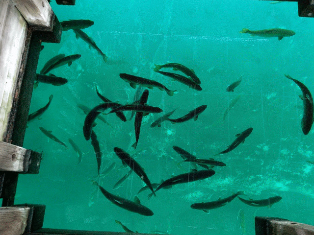
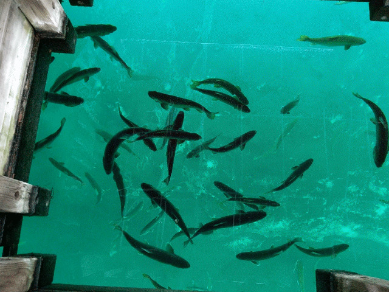
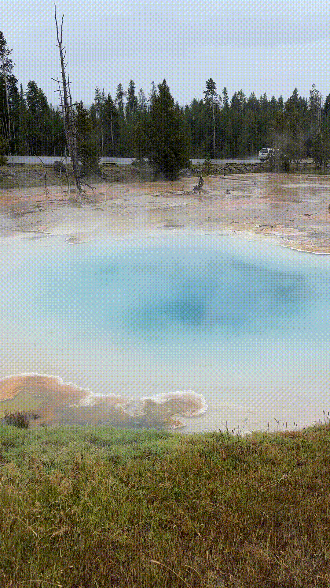
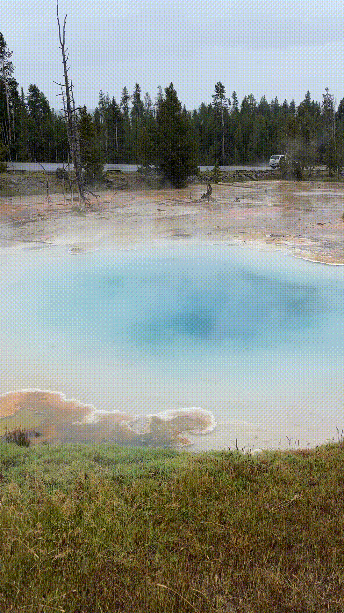
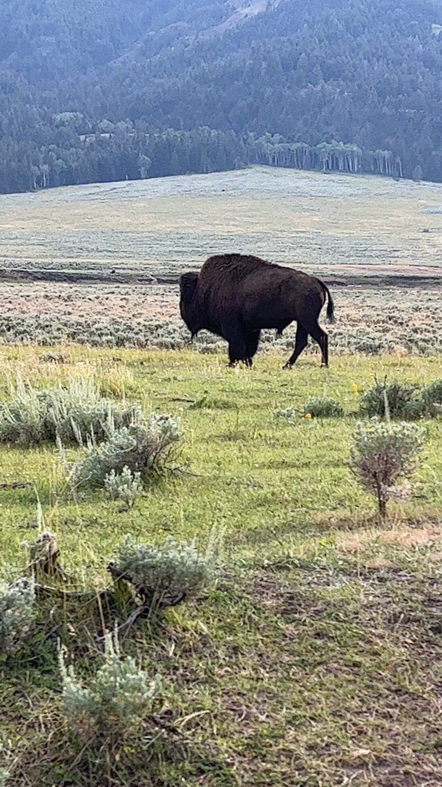
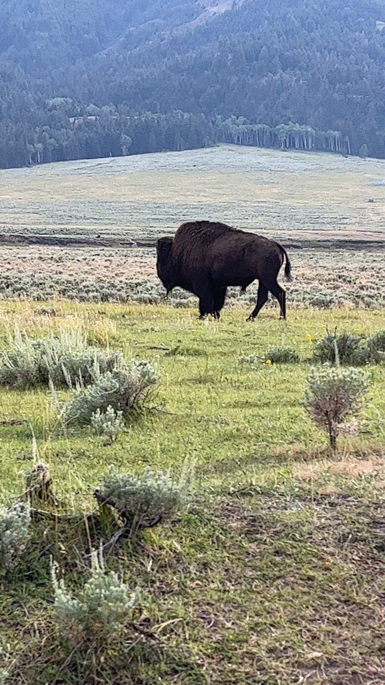

Kitch-iti-kippi
 

Geographical Location: North America
Kitch-iti-kippi is Michigan's largest natural freshwater spring, located in the state's upper peninsula. The water is so crystle clear that it reflects its surroundings, earning it the nickname "Mirror of Heaven" from the native Ojibwe tribe.
Visitors to the site can board a raft tethered to the shore. The raft has hole in its center, allowing tourists to look straight down through the clear water. Despite the water being 40 feet deep, you can see every detail on the bottom of the spring.
Photo Gallery

Yellowstone


Geographical Location: North America
Yellowstone is the first national park in the United States. It covers over 2.2 million acres, and provides an opportunity to see wildlife and explore geothermal areas. In fact, Yellowstone contains about half the world's active geysers.
These unique opportunities also bring out a lot of bad decisions among the tourists. Every year visitors injure themselves or the wildlife by getting close to the animals. You can see examples of people making bad decisions by visiting Yellowstone National Park: Invasion of the Idiots, Tourons of Yellowstone, or Cowboy State Daily.
Photo Gallery


 

 


Paris


Geographical Location: Europe
Paris is one of the oldest cities in Europe and the city of romance. With a vast amount of cultural history, lined with iconic landmarks, intimate scenes, and world-renowned art museums.
Paris welcomes millions of visitors annually, each drawn to its exquisite charm and beautiful ambiance. Enjoy tasty treats and exquisite cuisine await, while city landmarks illuminate the night sky.
Photo Gallery


Tahquamenon Falls
Geographical Location: North America
Tahquamenon Falls is a state park located in Michigan's upper peninsula. Besides the Upper and Lower Falls, the parks 48,000 acres also has 13 lakes, 24 miles of the Tahquamenon River, about 20,000 acres of untouched nature and over 35 miles of trails.
The Falls themselves are split into two parts. The Upper Falls is Michigan's largest waterfall, measuring nearly 200 feet across and 50 feet high. Up to 50,000 gallons of water flow down the Falls every second. The Lower Falls is actually a series of 5 small waterfalls, which flow around a central island. Visitors can play in the Lower Falls, but are not allowed in the water near the Upper Falls.